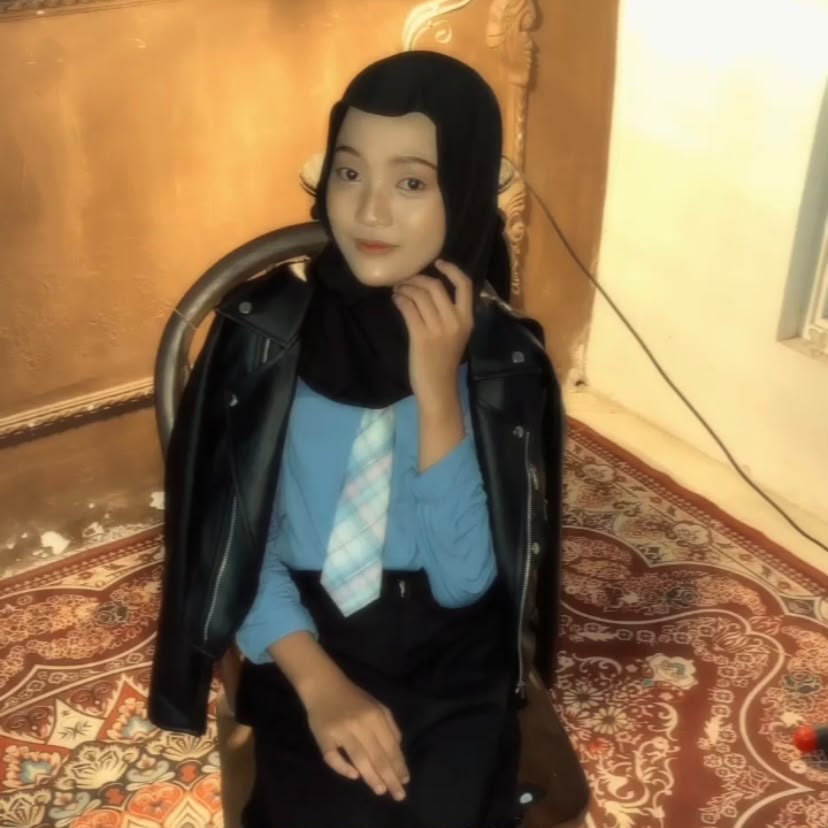

| Nama | : Inez Eriana |
| NIM | : 2513020008 |
| TTL | : Nganjuk, 02 Maret 2006 |
| Alamat | : Jalan Raya Warujayeng Kediri Prambon Nganjuk |
Deskripsi Singkat:
Saya adalah Mahasiswa Program Studi Sistem Informasi Semester 3 yang sedang berfokus mempelajari pengembangan web, pengelolaan basis data, serta analisis proses bisnis. Saya memiliki minat besar dalam menggabungkan teknologi dan solusi bisnis untuk merancang sistem yang efektif dan efisien.